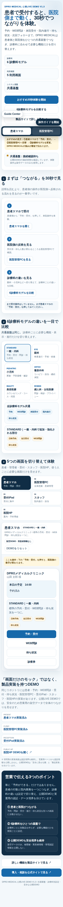

DPRO MEDICAL / オーナー様用 操作体験シート
実画面で、5分体験。
患者スマホ → 医院管理PC → 受付iPad → スタッフ → 医院HP。公開DEMOの架空データで、導入後の流れを順番に確認できます。


 1 公開DEMO2 患者画面3 医院管理PC
1 公開DEMO2 患者画面3 医院管理PC 4 First10
4 First105 System Check
5分で見る順番
01 / 30秒公開DEMOで全体像
02 / 60秒患者スマホを確認
03 / 90秒医院管理PC・iPad
04 / 90秒6診療科モデル比較
05 / 30秒Guide Center確認
患者側
予約・問診・受付・待ち状況。
医院側
管理PC・iPad・スタッフで院内進行。
導入後
契約後の本番テナント作成はREADY工程で実施。
PCでも確認できます
https://dpromstk2000-lab.github.io/dpro-medical-standard/medical-public-demo.html
https://dpromstk2000-lab.github.io/dpro-medical-standard/guide-center.html
料金・導入条件はDPRO SHOPで最新情報をご確認ください。

※ 本シートは操作体験用です。実在患者情報・実在医院情報は使用しません。DPRO MEDICALは医療行為・診療判断を代替しません。